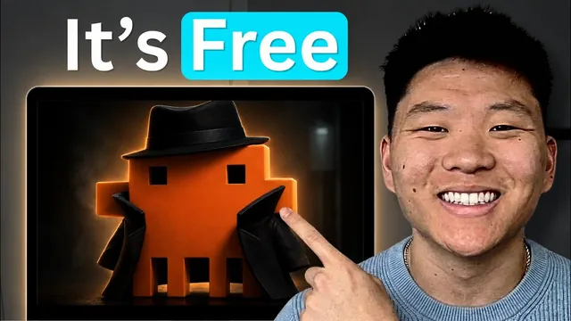

이 숨은 모델로 클로드 코드를 공짜로 쓴다

원본 영상 보기 →
- 속도와 품질은 별개 축이다
- 모델 교체는 설정 파일 전체에 일관되게 적용해야 한다
- 하네스의 맥락 활용 능력은 모델 교체와 무관하게 유지된다
한 줄 요약
OpenRouter의 무료 모델(스텔스 Ox Alpha 등)을 Claude Code 설정 파일에 끼워 넣으면 API 비용 없이 Claude Code 하네스를 그대로 쓸 수 있는데, 지식노동성 작업은 꽤 쓸만하지만 속도가 정상 Claude 대비 10배 이상 느리고 딥한 개발 작업에는 부적합하다.
전체 내용 정리
OpenRouter 무료 모델을 Claude Code에 연결하는 방법
Claude Code 데스크톱 앱은 설정을 강제로 덮어써서 이 방법이 통하지 않기 때문에, VS Code 같은 IDE에서 Claude Code 확장이나 터미널을 쓰는 방식이어야 한다. 먼저 openrouter.ai에 가입하면 500개가 넘는 AI 모델을 하나의 API 키로 라우팅해서 쓸 수 있는데, 이 중에는 Deepseek처럼 저렴한 유료 모델도 있고 영상 촬영 당일 출시된 Stealth Ox Alpha처럼 입력·출력 모두 100만 토큰당 $0인 완전 무료 모델도 있다. 모델 목록에서 "free"로 검색하면 무료로 쓸 수 있는 모델이 여러 개 뜨고, Claude Opus 5나 Fable 5, GPT, Gemini 계열도 모두 이 안에 들어있다. 계정을 만든 뒤 Credits 메뉴에서 API 키를 새로 발급받으면 준비 끝이다. 실제로 실험용으로 하루 동안 6,160만 토큰을 썼는데도 실제 청구된 금액은 13센트에 불과했다.
Claude Code 설정 파일(settings.json) 수정하기
Claude Code 프로젝트의 settings 파일 안에 있는 env(환경 변수) 섹션에 값을 넣어주면 된다. Anthropic 토큰 자리에 방금 발급받은 OpenRouter API 키를 넣고, 사용하고 싶은 모델(예: stealth/oxalpha)의 이름을 모델을 지정하는 모든 자리에 동일하게 복사해 넣어야 한다. 이때 중요한 점은 이 값을 설정 파일 안의 모든 모델 지정 슬롯에 똑같이 넣어야 한다는 것인데, 세션이 서브 에이전트를 호출할 때(예: Sonnet 서브 에이전트나 Opus 서브 에이전트) 그 자리도 별도로 모델명이 지정되어 있어서, 한 곳만 바꾸면 서브 에이전트가 여전히 다른 모델로 실행되기 때문이다. 새 세션을 열면 사용 중인 모델명이 화면 상단과(설정해뒀다면) 상태줄에 표시되어 제대로 적용됐는지 확인할 수 있다.
무료 모델이 계속 바뀔 수 있다는 점과 대안
OpenRouter는 무료로 제공하는 모델 목록을 종종 교체하기 때문에, 이 영상을 나중에 보는 사람이라면 Stealth Ox Alpha가 더 이상 무료가 아닐 수 있다. 이럴 때는 "free"로 검색해서 다른 무료 모델을 찾아 쓰거나, OpenRouter가 제공하는 "무료 모델 라우터"를 쓰면 된다. 이 라우터는 요청이 들어올 때마다 그 시점에 사용 가능한 무료 모델 중 하나를 자동으로 무작위 선택해서 연결해주는 가장 간단한 방식이다. 이 경우에는 모델명 자리에 "openrouter free"라고만 넣어두면 매 요청마다 다른 무료 모델로 라우팅된다.
데이터 보안 주의사항
Stealth Ox Alpha는 Stealth라는 회사의 익명 모델 제공자로, 정확히 어디서 만들어졌는지, 중국계인지 아닌지조차 알려져 있지 않다. 따라서 민감한 데이터를 다루는 작업이라면 출처를 알 수 없는 익명 AI 제공자에게 그 데이터를 넘기는 것이 적절한지 신중하게 판단해야 한다.
테스트 1: 브랜드 랜딩페이지 제작 — 결과는 좋았지만 6시간 소요
/goal 명령으로 특정 프로젝트 디렉토리로 이동해 제품 상세 정보가 담긴 클릭 가능한 온브랜드 랜딩페이지를 만들라고 지시했다. Claude Code의 정상적인 루프(목표 인지 → 사고 → 파일 검색 → 작성 → 도구 사용)는 그대로 작동했지만, 계속 "upstream idle timeout exceeded"라는 API 오류가 발생했다. 한 번에 너무 많은 것을 쓰고 살펴보려 했기 때문으로 보였고, 더 작은 단위로 나눠서 작업하라고 지시하자 문제없이 이어갔다. 결과물은 로고, 실제 패키징 이미지, 브랜드 컬러·타이포그래피·여백 등 브랜드 가이드라인을 정확히 반영했고, 두 제품을 슬라이드로 보여주는 UI, 개별 상품 상세 페이지, 장바구니 담기 기능까지 실제로 작동했으며 영양성분표까지 만들어냈다. 다만 이미지 지정을 실수해서 실물 사진 대신 패키징 이미지가 쓰인 부분은 있었지만, 이는 지시가 잘못된 탓이었다. 문제는 결과물 품질이 아니라 이 작업에 6시간이 걸렸다는 점으로, 일반 Claude였다면 이렇게 오래 걸리지 않았을 것이라고 밝혔다.
테스트 2: 유튜브 채널 분기·연간 리포트 및 2027년 예측 — 품질은 괜찮으나 역시 느림
과거 분기와 지난 1년치 유튜브 채널 데이터를 바탕으로 리포트를 뽑고, 채널·오디언스·니치를 기반으로 2027년 콘텐츠 준비 방향을 예측해서 최종 결과물을 구글 시트로 만들어달라고 요청했다. 이 작업도 6시간이 걸렸는데, 일반 Claude Code였다면 20~30분이면 끝났을 일이라고 설명했다. 흥미로운 점은 이 작업을 시킨 프로젝트 폴더("Freecloud Code")에는 아무 맥락 파일도 없었고, 있던 CLAUDE.md조차 전혀 다른 옛날 프로젝트에 관한 것이었는데도, 모델이 다른 프로젝트를 스스로 뒤져서 이미 작성돼 있던 스크립트와 API 키를 찾아내 유튜브 데이터에 접근하는 데 활용했다는 것이다. 결과물은 월별 조회수·시청시간·구독자·평균 시청자·인기 영상, 국가·오디언스·기기별 소스 데이터, 전체 468개 영상 분석, 2027년 전망까지 담겼고 데이터 분석 품질 자체는 괜찮았지만, 소요 시간을 고려하면 차라리 직접 하는 편이 비슷하거나 더 빨랐을 수도 있다고 평가했다.
테스트 3: 영상 정리 후 스킬 데이터베이스 등록 — 44분 만에 인프라 오류로 중단
Herk 2(개인 AI 운영체제) 프로젝트에서 유튜브 영상 하나를 처리해서 리소스를 정리해둔 시트에 스킬로 등록해달라고 요청했다. 외부 모델임에도 프로젝트의 CLAUDE.md를 읽고 등록된 Claude 스킬과 메모리를 정확히 인지해서 필요한 스킬을 곧바로 찾아 사용했다는 점은 긍정적으로 평가했다. 하지만 이 작업은 원래 일반 Claude로 5분이면 끝나는 일인데 계속 진행되다가, 로컬 작업은 다 끝났지만 Claude Code 인프라 문제로 막혔다는 메시지와 함께 재시도 루프를 멈추고 작업을 넘겼다. 흥미롭게도 모델은 스스로 크론(cron) 작업을 만들어 10~20분 간격으로 재시도를 시도하기도 했지만, 결국 44분 만에 막혔다고 인정하며 종료했다.
테스트 4: 커뮤니티 게시글 분석 — 25분 만에 완료, 비교적 양호
커뮤니티(AIS Plus)에서 지원이 필요한 게시글 166개를 가져와 공통된 주제 3가지를 뽑아달라고 요청했다. 각각 30개, 15개, 35개 게시글이 몰린 주제를 찾아냈고, 소요 시간은 25분으로 다른 테스트보다는 훨씬 짧았지만 그래도 일반 Claude보다는 느렸다. 다른 세션에서는 Ox Alpha 스텔스 모델 자체를 조사해서 HTML로 정리해달라고 요청했는데, 오류가 반복해서 발생했다고 언급했다. 그럼에도 이 모델이 Claude Code의 스킬 호출, 웹 페치, 웹 검색 같은 하네스 기능을 그대로 활용할 수 있다는 점은 긍정적으로 봤다.
종합 평가: 지식노동엔 쓸만하지만 딥한 개발 작업엔 부적합
결론적으로 소프트웨어를 만들거나 깊은 기술적 작업을 시키는 용도로는 무료 모델·소형 로컬 모델이 Claude나 GPT를 절대 따라가지 못한다고 단언했다. 반면 지식노동(리포트 작성, 데이터 분석, 콘텐츠 정리 같은 작업)에는 상당히 잘 해낸다고 평가했다. 그리고 평소 Opus 5나 GPT 5.6 Soul 같은 최상위 모델로 하루하루 작업을 돌리는 것은 대부분의 경우 과할 수 있다는 견해도 덧붙였는데, 실제로 복잡도가 높은 작업은 일부일 뿐이고 정말 강력한 모델이 필요한 경우는 프로젝트 전체를 스코핑하거나 여러 서브 에이전트·워크플로우를 오케스트레이션할 때 정도라는 것이다. 크레딧이 다 떨어졌을 때 가벼운 작업을 계속 이어가고 싶다면 무료 모델을 대안으로 써볼 만하다는 게 최종 권장 사항이다.
핵심 인사이트
- 속도와 품질은 별개 축이다: 이번 테스트에서 결과물 품질 자체는 대부분 준수했지만, 소요 시간이 정상 대비 10배 이상 길어져 실무 투입 가치가 크게 떨어졌다. 무료 모델을 검토할 때는 "얼마나 잘하나"뿐 아니라 "얼마나 걸리나"를 반드시 함께 따져야 한다.
- 모델 교체는 설정 파일 전체에 일관되게 적용해야 한다: 세션이 서브 에이전트를 호출할 때도 별도의 모델 지정 슬롯이 있기 때문에, 한 곳만 바꾸면 서브 에이전트가 여전히 다른(유료) 모델로 실행될 수 있다. 비용 절감을 노린다면 설정 파일의 모든 모델 지정 자리를 빠짐없이 바꿔야 실제로 효과가 있다.
- 하네스의 맥락 활용 능력은 모델 교체와 무관하게 유지된다: 외부 무료 모델을 끼워 넣어도 Claude Code 프로젝트의 CLAUDE.md, 등록된 스킬, 메모리 파일을 정확히 인식하고 활용했다. 이는 Claude Code의 가치가 모델 자체보다 하네스(도구 호출·컨텍스트 관리 체계)에도 상당 부분 있다는 뜻이라 비용 최적화 전략을 세울 때 참고할 만하다.
오늘 당장 해볼 것
- openrouter.ai에서 계정을 만들고 Credits 메뉴에서 API 키를 발급받는다. 모델 목록에서 "free"로 검색해 현재 무료로 열려 있는 모델을 확인한다.
- VS Code에 Claude Code 확장을 설치한 뒤(데스크톱 앱은 불가) settings.json의 env 섹션에서 Anthropic 토큰 자리에 방금 발급받은 OpenRouter API 키를 넣고, 모델명이 들어가는 모든 슬롯에 원하는 무료 모델명(또는 "openrouter free"로 무작위 라우팅)을 동일하게 입력한다.
- 급하지 않은 지식노동성 잡무(리포트 초안 작성, 데이터 정리, 자료 요약)부터 이 설정으로 돌려보되, 민감한 고객 데이터나 개인정보는 출처가 불분명한 익명 모델에는 넘기지 않는다.